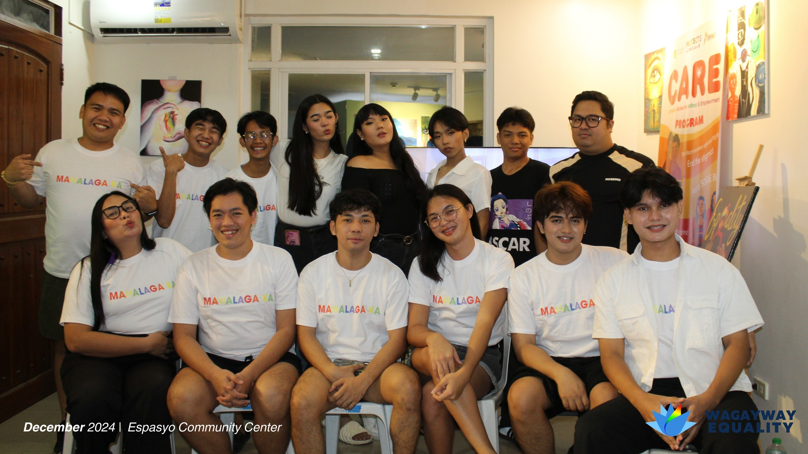

Wagayway Equality is a non-government, non-profit, community-based organization based in Batangas City that actively advocates for sexuality, health, rights, socio-economic development and the inclusive integration of the LGBTQIA+ community, the youth (YKP), and other targeted key-affected populations in our society since 2007. The organization aims to raise the awareness and knowledge of identified key affected populations for positive behavior change and stigma & discrimination reduction to create an enabling, safe and inclusive space for all to learn and access sexual & health, rights, and other support services. Throughout the years, the organization has played a pivotal role in effecting legislative changes by actively participating in the amendment of the Batangas Province Local AIDS and Anti-Discrimination (LAAD) Revision Ordinances and other local government policy lobbying efforts, while embarking on extensive array of capacity-building initiatives and training sessions of the key populations especially concerning SOGIESC, HIV & AIDS, Sexual Health and Human rights issues. Moreover, it actively engages in various outreach and community programs in different localities in Batangas centers in Human Rights and HIV Care and Treatment, providing free community-based HIV testing and learning group sessions (HIV 101, SOGIESC, Legal Literacy, and many more) to empower such communities. Going beyond such advocates, Wagayway Equality envisions fostering a community of volunteers who passionately contribute their time and expertise to drive the organization's initiatives forward.

VISION
A highly recognized organization dedicated to advancing gender equality and championing the health and rights of young people, key-affected populations and the LGBTQIA+ community.
MISSION
Through advocacy and collaboration, we are actively working to create an inclusive society that offers safe spaces, access to healthcare, the freedom to express oneself, and ensures that everyone has equal opportunities while safeguarding their rights.
GOALS
- Establishing Wagayway Equality as a Highly Esteemed and influential Advocate for Equality in Region 4A - CALABARZON
- Pioneering the establishment of Equality Desks in various cities and municipalities, ensuring comprehensive outreach and support
- Advancing the cause of equality through comprehensive primary healthcare initiatives
- Spearheading the development and implementation of an impactful social enterprise program, fostering inclusivity and sustainability